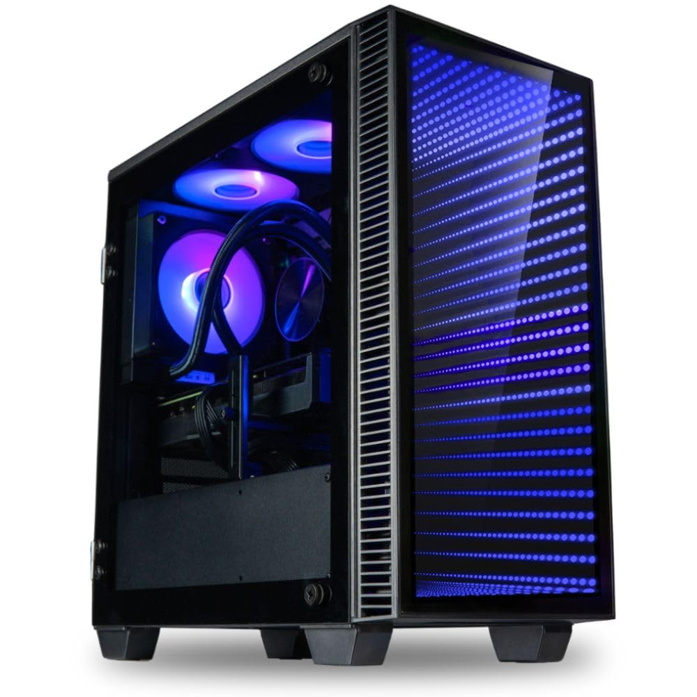

Computadora Gamer Xtreme 2024
Características:
Procesador: Intel Core i9-13900K
Memoria: 32GB RAM
Almacenamiento: 1TB SSD
Tarjeta Gráfica: NVIDIA RTX 4090
Precio: $2,200
Solicita Más InformaciónEn Venta de Computadoras, entendemos que los gamers buscan equipos que ofrezcan un rendimiento excepcional, una alta calidad gráfica y una experiencia de juego sin interrupciones. Por eso, hemos seleccionado las mejores computadoras para juegos que combinan potencia, velocidad y fiabilidad.
Características:
Procesador: Intel Core i9-13900K
Memoria: 32GB RAM
Almacenamiento: 1TB SSD
Tarjeta Gráfica: NVIDIA RTX 4090
Precio: $2,200
Solicita Más InformaciónCaracterísticas:
Procesador: AMD Ryzen 9 7950X
Memoria: 16GB RAM
Almacenamiento: 512GB SSD + 2TB HDD
Tarjeta Gráfica: AMD Radeon RX 7900 XT
Precio: $1,800
Solicita Más InformaciónNuestras computadoras para juegos están diseñadas para ofrecer un rendimiento superior y una experiencia de usuario inigualable. Aquí te explicamos por qué deberías considerar nuestras ofertas:
Escucha lo que nuestros clientes tienen que decir sobre nuestras computadoras para juegos:
"La Computadora Gamer Xtreme 2024 ha transformado mi experiencia de juego. El rendimiento es increíble y los gráficos son impresionantes. Muy recomendable." - David Rodríguez
"La Computadora Gamer Pro 2024 es perfecta para mis necesidades. Rápida, potente y confiable. El soporte al cliente fue excelente, ayudaron a resolver todas mis dudas." - Lucía Martínez
¿Tienes preguntas sobre nuestras computadoras para juegos o necesitas ayuda para elegir el modelo adecuado? No dudes en ponerte en contacto con nosotros. Estaremos encantados de asistirte y proporcionarte toda la información que necesites.
Envíanos un Mensaje